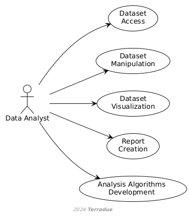

D1 · CopernicusLAC Centre Specification and Performance Requirements · Capítulo 2.3
Data Analyst
Data Analyst: manipula datasets vía Portal y APIs, aplica técnicas analíticas, genera informes y usa notebooks, QGIS, Panoply e IDEs en la nube.
pp. 9–101 fig.
Data Analysts focus on the detailed examination and interpretation of data to extract meaningful insights. Their tasks include:
- Accessing and manipulating datasets through the CopernicusLAC Portal and associated APIs.
- Applying various analytical techniques and tools to process and analyse data.
- Creating reports and visualisations to present findings.
- Utilising notebooks and interactive graphical applications (e.g., QGIS, Panoply) for detailed data analysis and visualisation.
- Using notebooks and/or Cloud-based IDEs for advanced data analysis and algorithm development within the platform.
